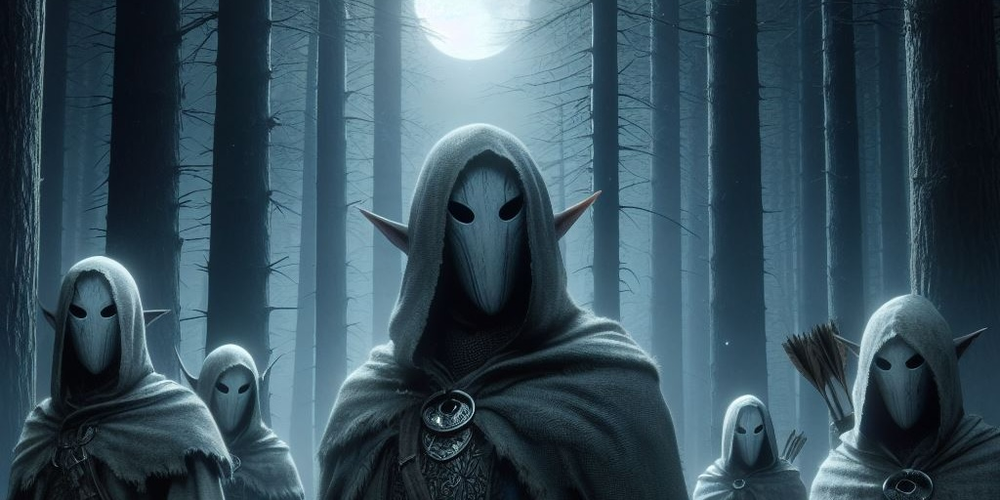

Chapter 1: Moonlight Predators
Deep into Lothum

Deep into Lothum
15049.09.03
經過了九個月左右的時間，冒險者們終於長途跋涉到洛森王國。旅行途中，華生和 Lott 都從 Ra’Leer 那兒學會了一點妖精語的基礎，而 Lott 同時也學習了一點吹奏笛子的技巧。然而，Tweeter 對他身邊的法器，並沒有得到更深入的認識。不過因為一路上支出大家的旅費，M 伯爵破產了。
來到洛森王國的關口，在 Ra’Leer 的鼓勵下，Lott 和華生嘗試用妖精語詢問衛兵該如何到王國的首都弗萊特境，卻無法得到他們能理解的答案，於是還是靠著 Ra’Leer 和衛兵溝通，才成功入關。同時，Ra’Leer 也不斷提醒冒險者們，因為妖精有很嚴重的種族歧視，來到妖精王國，要盡可能地表現的「更妖精」一點，不過他的說法只讓冒險者們滿頭問號。
騎著馬，Tweeter 背後突然蹦出了一個身影，跌坐在他的馬上，大家回頭一看，是個熟悉的人影。先前被神王呼喚回去的 Sugalu 竟然出現了，但外貌上產生了些微的變化—他身著斗篷，頭髮盤著，膚色似乎蒼白了一點。大家停下馬，和重新出現的 Sugalu 詢問，得知他獲得了一個新的名字：Iren Drogskol，而過去對神王的質疑與輕視，似乎轉變為崇敬與信仰。對於這個既熟悉又陌生的夥伴，大家決定先繼續趕路再說。
接近日落時刻，冒險者們在樹林邊看見了一名行蹤鬼祟的人影。經過追擊，他們將這名人形生物撂倒在地，撥開他的頭盔，看起來是一名人類。人類向他們求情，表示自己名為 Pascal。而經過與 Pascal 的溝通，他們得知 Pascal 是先前與他們一同冒險的 Paladin 的哥哥，因為聽聞麥克嵩傳來的 Paladin 死訊，並在麥克嵩打探資訊後，前往洛森王國尋找可能知道 Paladin 消息的人，正巧碰上冒險者們。對於說話似乎充滿漏洞的 Pascal，冒險者們還是告知了他 Paladin 基本上已經是死透的事，也表示大家是因此才來洛森王國尋找蜘蛛神教的母親大人。Pascal 掏出自己珍藏的捲軸，召喚出了一隻貓頭鷹，將消息傳遞出去後，便與冒險者們一同前行。
夜晚，冒險者與甫加入的 Iren 以及 Pascal 因為 Ra’Leer 警告（非妖精在洛森王國內都不會過夜，因為晚上很有可能被妖精處理掉），小心翼翼地搭建了一個隱密空間躲藏，並輪流守夜。
15049.09.04
在華生的魔法失效的同時，冒險者們一併從魔法空間內摔到地面，不用叫喚也都醒了。大家簡單進食後，便騎馬前往不到半天路程的弗萊特境。
妖精的城市和人類王國內的模式很不同，大量繽紛的帳篷散落在森林間，地上的道路不像特別鋪出來的，而是走出來的。在 Ra’Leer 的指引下，大家先去見一位被尊稱為「師父」的在地耆老，向他詢問關於蜘蛛神教和母親大人的消息。
來到師父的帳篷，兩名年輕的妖精雙胞胎女子 Rina 和 Rita 迎接了大家，熟稔普通語的他們同時擔任師父的服侍以及翻譯。冒險者們詢問了關於母親大人巢穴的位置，師父將地圖「投影」至空中，讓冒險者們檢視。華生拿出紙筆抄寫，而 M 伯爵則靠著他的魔法球成功的把地圖抄錄在其中，也確認能夠直接投影出來。
Rina 和 Rita 奉了茶給冒險者們喝，對於沒看過的茶，幾名冒險者還是戒慎恐懼。華生和 Lott 飲用後，開始產生幻覺，看見帳篷內快速長出大量的植物，甚至能攀爬其上。在植物充滿了整個帳篷後，一顆狀似珍珠的神奇果實落在帳篷的正中央。隨著植物枝幹消失，果實發出了嬰兒的哭聲。師父告訴冒險者們，這是只有外地人才會拿到的，要好好照顧它。它的狀況會反映冒險者們此趟冒險的順利程度，若沒能妥善照顧，這趟旅途會異常的艱辛，甚至會失敗。
離開前，冒險者們和師父詢問了是否有推薦的嚮導，師父推薦了一位名為 Phola，年輕有潛力的嚮導，於是冒險者們決定去見這名 Phola。然而，冒險者們連離開這片樹林都做不到，在迷路的途中，遇到了一名自稱「Magga」的嚮導，成功帶他們離開樹林。
見到了 Ra’Leer，冒險者們討論著是否要改聘 Magga 為嚮導。Ra’Leer 表示 Magga 有經驗且能力很好，但他是個好色之徒。在洽詢酬勞時，他提出了每晚要讓 Iren 和華生輪流侍寢，或是再找一名女子每晚與他共枕，於是冒險者們很快就放棄他了，決定去找 Phola。不過在 Ra’Leer 的說明下，他們才知道 Phola 是師父的孫子。
Phola 雖然沒有像 Magga 那麼誇張的請求，但他還是他出了讓冒險者感到擔憂的條件：每晚要給他兩瓶酒，包含來回大約兩週時間。冒險者們勉強答應了。
為了準備酒以及這些天數的糧食，冒險者們進行了採購。聽 Ra’Leer 的說明，妖精們不喜歡用人類王國通用的錢幣，比較喜歡以物易物，但還是有機會用較高金額的錢幣買東西。
冒險者們先去了一間願意接受錢幣的酒舖，買了大量劣質的酒。老闆雖然開價高昂，但在殺價後以還能接受的價格買了酒。冒險者們也在和老闆嘗試溝通後，讓老闆以比較平和的態度說明了非妖精在洛森王國的窘境。
接著，冒險者們找了附近一家雜貨店採買乾糧以及其他需要的用品。在妥善計畫後，夸塞魔和 Lott 悄悄將乾糧從帳篷內運出，其他冒險者們則讓店內的老闆夫妻與兩名孩子 Monu 與 Mina 兄妹倆忙碌。冒險者們除了偷偷拿走的乾糧外，還額外採買了不同尺寸的袋子、繩子、岩釘，Tweeter 也買了一罐他感覺到與月神有感應的藥水。然而，這家店鋪收的價錢與冒險者們在人類王國消費的金額差不多，也讓大家有些過意不去，於是華生在臨走前塞給了兩兄妹各一枚金幣作為感謝。
接近日落，冒險者們與 Ra’Leer 和 Phola 會面，原以為用餐後甚至過夜後隔日才出發，但 Ra’Leer 表示 Phola 已經開始計價了，因此提議馬上出發。
上馬一段時間後，冒險者們停在樹林邊一處，準備用餐休息。喝了華生偷偷摻入安眠藥的酒，Phola 很快就昏過去了。冒險者們準備休息，卻看見了遠處銀白色的反光。出於警戒和好奇，冒險者們準備好武器，尋找這些反光的來源。
隨著華生叫出了兩隻殭屍各種了一支箭應聲倒地，一場戰鬥突然開始。數名身穿獵裝，臉戴銀白色面具的妖精從四面八方襲擊，靠著魔法、弓箭、匕首等對冒險者們毫無保留的砍殺。少了 Phola 的冒險者們打得非常艱辛，但 Tweeter 卻有種莫名的感受—一種歸屬感，一種喜樂，一種他無法形容的舒適感。在幾名敵人倒下，幾名冒險者們快要倒下時，他們看見了失去翅膀的 Tweeter 倏地竄上了空中，背後展開了難以形容其形狀和色彩的「翅膀」，繽紛而奇幻的光照在四周一切之上，所有人的腦內充斥著無法形容的痛楚。
失去意識的 Tweeter 緩緩落地而倒下，同時數名夥伴與敵人也都失去了意識。尚存的敵人落荒而逃，冒險者則趕緊確認身邊夥伴的意識與身體狀況。
在一片漆黑之中，Tweeter 聽見了他熟悉的聲音，那是他宗主的聲音。他詢問著宗主這是什麼意思，而宗主只告訴他那些都是祂的孩子，是 Tweeter 的夥伴。Tweeter 努力抵抗來自宗主的力量，最終宗主只留下了一句話「你終究只是我的玩具罷了」。
在 Tweeter 睜開眼睛時，他的腦中瞬間湧入龐大的知識，關於那些攻擊他們的團體。
名為「月光狩獵會」的月神支派。
清醒的冒險者們將昏迷的夥伴搬往火堆邊，確認大家的傷勢，並逐一喚醒 Tweeter、Lott 和 Phola。他們也突然發現才剛回歸的 Iren 竟然又不見了，而且買給 Phola 的酒都在他的身上。
在搜刮屍體的過程中，冒險者們發現了月光狩獵會成員固定的穿著，包含整套的獵裝、披在肩上的熊皮、掛在胸前的彎月吊飾（材質似乎是石頭打磨出來的，但奇異的是除了正面以外都打磨地很光滑，正面的紋路每個人都稍有不同），以及戴在臉上的純白面具。在搜集的過程中，冒險者們也發現其中一副面具與其他的不同。這副面具的表面雖然也是白色的，但隨著接觸他的東西溫度不同，會浮出較為深色的色調。
因為體力不支，冒險者們決定先在火堆邊過夜，隔日再出發。安排完守夜順序後，大家便逐一就寢。